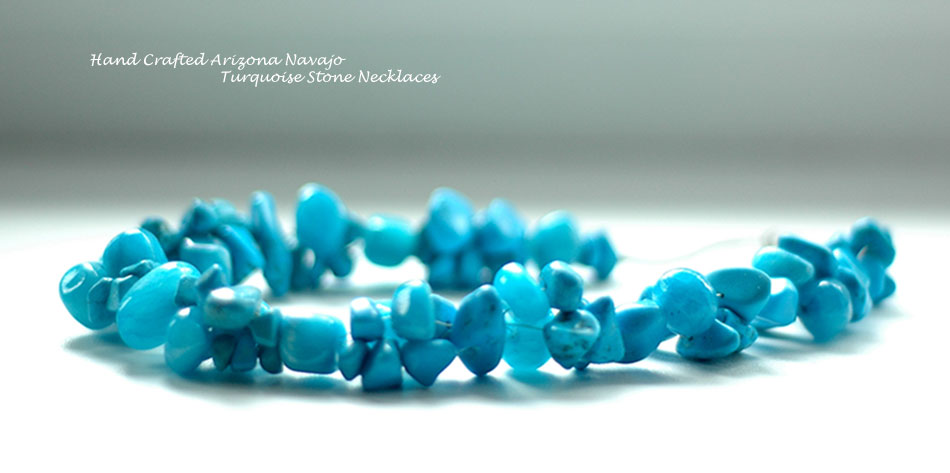

Zetsy

About
Mary Wanesia is Jeweler, an Arizona native, and a member of the Navajo tribe. She specializes in creating beautiful contemporary takes on the tradional adornments worn by Navajo in ceramonies and in daily life.
Jewelry in the Americas has an ancient history. Beginning as far back as 8800 BCE, Paleo-Indians in the American Southwest drilled and shaped multicolored stones and shells into beads and pendants. Olivella shell beads, dating from 6000 BCE, were found in Nevada; bone, antler, and possibly marine shell beads from 7000 BCE were found in Russell Cave in Alabama; copper jewelry was traded from Lake Superior beginning in 3000 BCE; and stone beads were carved in Poverty Point in Louisiana in 1500 BCE. Learn more.
Mary's jewelry has received recognition, and been featured in the National Museum of the American Indian, The New York Times Style Magazine, and Sedona Monthly. The collection been has sold across the United States and Europe and been carried by the retail stores of Bergdorf Goodman.